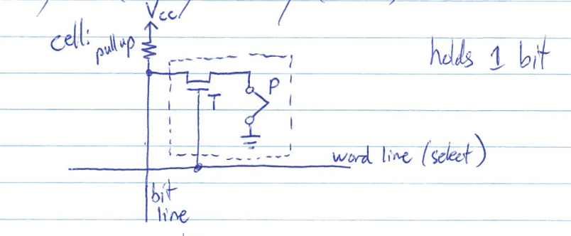
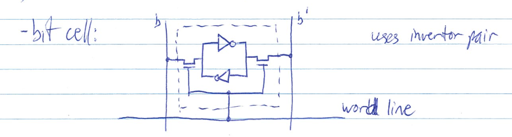
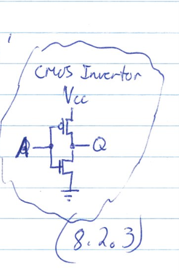
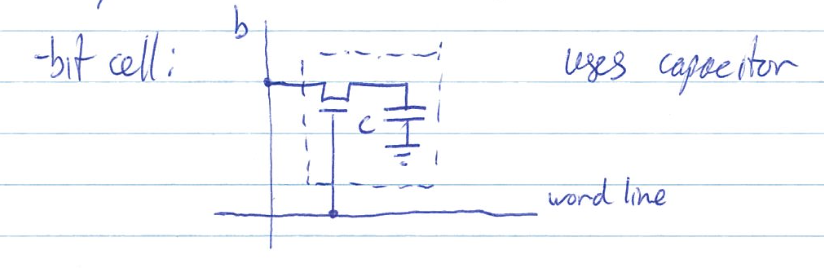
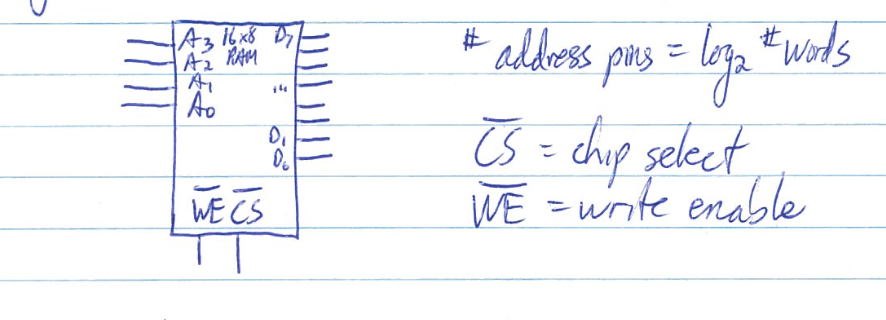
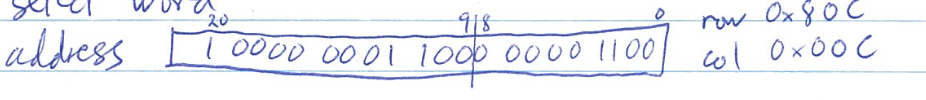

Retains data on power off

Loses data on power-off



| Type | Volatile? | Writable | Erase Size |
|---|---|---|---|
| ROM | no | no | - |
| PROM | no | once | - |
| EPROM | no | yes | whole chip |
| EEPROM | no | yes | byte |
| Flash | no | yes | block |
| SRAM | yes | yes | byte |
| DRAM | yes | yes | byte |
e.g. 16 word x 8 bit chip

For internal view, see handout
Decoder asserts a word line to enable a raw
e.g. 2M word x 8 bit (221 words)
requires 21 x 2097152 decoder(slow!)
instead, arrange bit cells in symmetric array
221 words x 23 bits/word
= 224 bits(16M)
= 212 x 212 bits
= 4096 x 4096 bits
see handout
decoder us 12 x 4096
each raw contains 4096/8 = 512 words
need 212:1 max to select word
put address bits A20 - A9 on pins and assert Row Address Strobe(RAS) to select row
next put A8 - A0 on pins and assert Column Address Strobe(CAS) to select word
timing diagram: async DRAM read(2 words)

memory has to "banks" timed to different clock edges and data is stripped across banks
|0| |1|
...
DDR: 2000, DDR2: 2003, DDR3: 2007, DDR4: 2013
e.g. PC3-12800 - 800MHz clock
=> 1600MT/s x 8 bytes/transfer = 12 800MB/s
e.g. word size = 8 bytes, clock speed = 200MHz, 2 word read
Hz = cycle / s
Async: 2 words x 8 bytes / word x 200 MHz / 12 cycles = 267 MB/s
FPM: 16 bytes x 200MHz / 9 cycles = 356 MBs
SDRAM: 16 bytes x 200MHz / 7 cycles = 457 MB/s
DDR: 16 bytes x 200MHz / 6 cycles = 533 MB/s
Click here for the next chapter